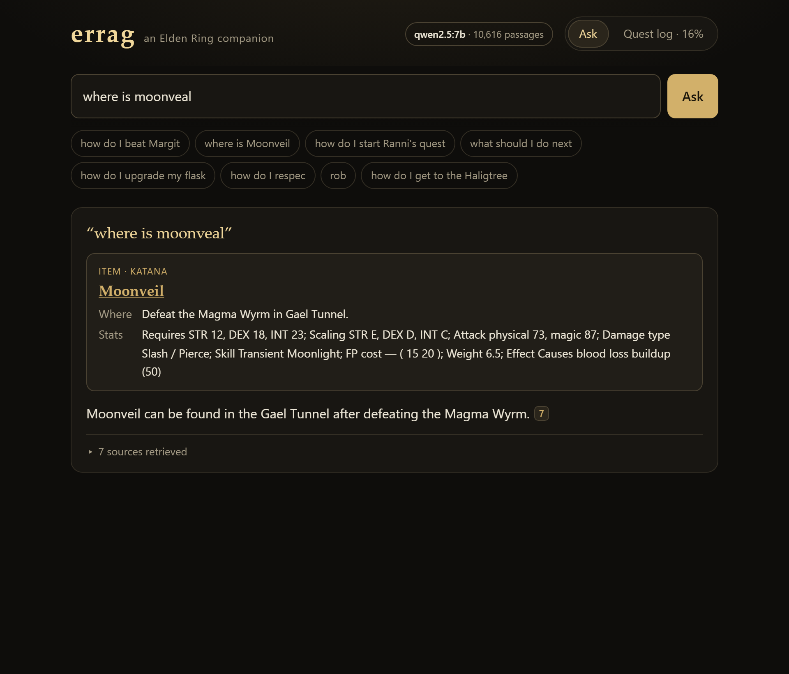
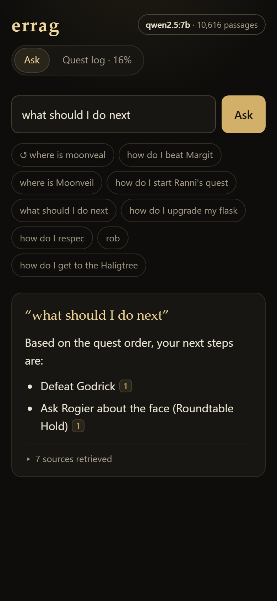
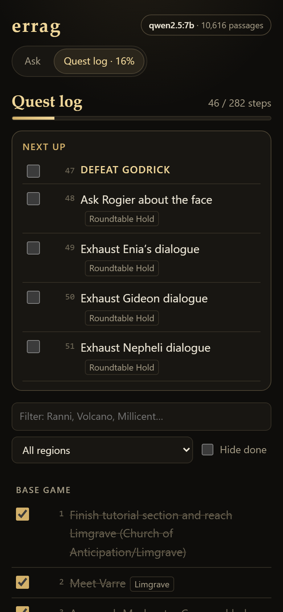

Asking a wiki the questions you actually ask mid-playthrough
errag is a local Elden Ring assistant: wiki pages and my own quest-order list in SQLite, a retriever that
picks the right passages, and a small model on my GPU that answers only from them, citing each claim. The first version passed its
own tests and still failed the questions I actually had while playing. This page shows what changed, using the system's real outputs.
4 → 18 of 20
unseen questions with the right page in the top 3, first run (20 after two general fixes)
7 → 32 of 32
playthrough questions written before measuring, then tuned against
10,616
wiki passages, 2,867 items and 282 quest steps, all in one local SQLite file
qwen2.5:7b
answers on an 8 GB RTX 2070 SUPER; no API key, no network at question time
Before and after
Same question, what the model gets handed
A retrieval system is only as good as what it puts in front of the model. Pick a question: the left column is what the original
retriever handed over (top three pages), the right is what it hands over now, followed by the answer qwen2.5:7b gave from it at
temperature 0. A tick marks a page that actually answers the question. The verdicts are mine, checked against the game.
Before original code, original corpus
Now
Measured
Where the improvement came from
Each question passes if a page that answers it is in the top three retrieved blocks. Running the original retriever on the widened corpus
separates the two changes: fetching NPC, location and system pages helped a little, and the retrieval rewrite did most of the work.
Playthrough set · 32 questions, tuned againstHeld-out set · 20 questions, first run
Show as a table
Configuration
Playthrough (32)
Held-out (20)
The playthrough set was written before any measurement and then tuned against, so its 32/32 flatters the code. The held-out set was
written after the rewrite and run once: 18/20. Its two misses (a plural, and a boss the quest document never names) were fixed generally, which spends that set;
the next round of changes needs a fresh one.
The pipeline
What happens to a question
Rewrite the player's words into the wiki's
A hand-edited shorthand file maps nicknames to in-game names, and goals to the pages that answer them. Misspelled name words are corrected,
but only if the word appears nowhere in the wiki's own prose, so "where" is never "corrected" to "wheel".
Every page has a kind (boss, NPC, location, armour, item, guide) read from all of its wiki categories. The intent prefers a kind; an item named
after someone loses to that someone; ties go to the page the rest of the wiki mentions most.
haligtree → Miquella's Haligtree (location), not Haligtree Gauntlets (armour)
Assemble the context, best first
Quest orderfor progression questions, an ordered window of my quest list, skipping steps I've ticked off
Concept pageswhat the shorthand file points at
Named pagestheir item card (location, requirements, scaling) and the sections that fit the intent
Keyword searchBM25 over section-level chunks, to fill the rest
Answer from that, and only that
The model gets the question before and after the context and a short rulebook: the direct answer first, at most six ordered bullets, a citation
on every line. Each rule exists because a 7 to 8B model got that thing wrong without it.
What measuring found
Bugs no unit test would have caught
Almost every one of these was found by asking a real question and reading what came back, not by a test written in advance. Each is now a regression case.
"Is Margit weak to anything?" retrieved Margit's Shackle.
Cause
A page counted as a boss only if "Bosses" was its first wiki category. Margit's first is "Characters".
Fix
Kinds read from every category.
"How do I start Ranni's quest?" retrieved Ranni's Scroll.
Cause
No NPC pages in the corpus, and nothing told a person apart from an item named after them.
Fix
Fetched NPC and location pages; possessive items are demoted unless named.
"Lake of Rot" could never match by name.
Cause
Stop words were stripped from questions ("lake rot") but not from page names ("lake of rot").
Fix
Strip them from both sides.
"How do I get to Leyndell?" was told to defeat Maliketh.
Cause
Royal and Ashen Capital tied on name, and the tie went alphabetically to the late-game page.
Fix
Ties go to the page the wiki mentions most (222 passages against 52).
"Dark moon greatsword" resolved to an item called "Dark Moon".
Cause
A new nickname, dark moon → dark moon greatsword, was also applied to aliases, giving the wrong item an exact match.
Fix
Nicknames expand questions only.
"Where is moonveal" showed the Moonveil card, then said nothing matched.
Cause
Spelling correction existed in the item lookup but not in chat retrieval.
Fix
Both correct typos, restricted to words the wiki never uses.
Ticking off "Talk to Fia" ticked a second step too.
Cause
Progress was keyed by step text, and the quest list repeats some lines word for word.
Fix
Key by text plus occurrence.
Closing a browser tab killed the server.
Cause
The CLI makes SIGPIPE fatal so piping into head exits quietly; a dropped stream did the same to the web server.
Fix
serve ignores SIGPIPE.
Using it
A page to keep open beside the game
errag serve starts a local web page I can open on my phone while I play. Answers stream in as the model writes them, each citation highlights its
source, and a confident item match shows a card with location, requirements and scaling. The quest log is my quest-order list as a checklist, and
"what should I do next" answers from the first steps I haven't ticked off.

A typo, resolved: the item card, then the answer with its citation.

"What should I do next", from my own progress.

The quest log: next up, filters, done up to here.
Still open
What it still gets wrong
The model can still invent details. For "how do I get to Leyndell", retrieval now hands over the right page, and qwen2.5:7b still adds a route
through the sewers that isn't there. Retrieval checks can't catch that; the citations are there so I can.
The quest list's DLC section is truncated. The source document stops mid-sentence: 12 Shadow of the Erdtree steps with no region tags, against 270 base-game steps.
The question sets are small and mine. 52 playthrough questions and one person's judgement of what "right" means. The held-out set is now spent.
Heuristics, not learning. Intent words, kind bonuses and the shorthand file are judgement calls. They are testable now, which is not the same as correct.